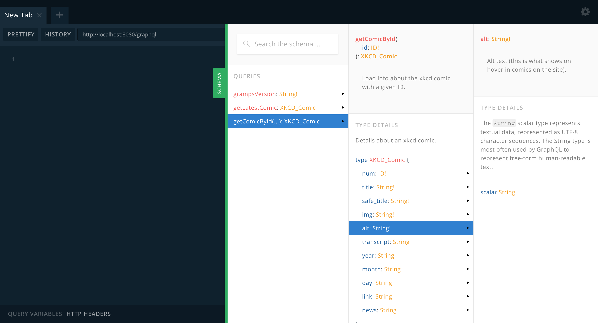
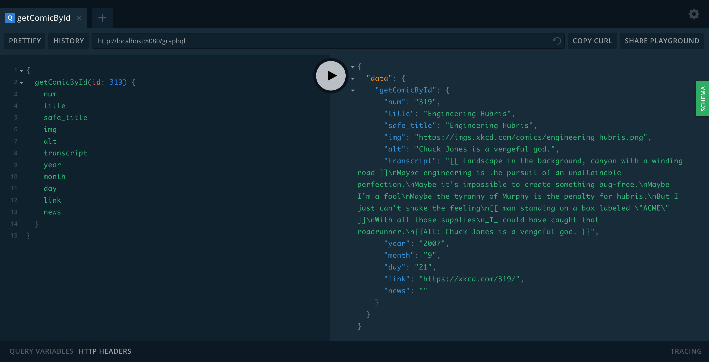
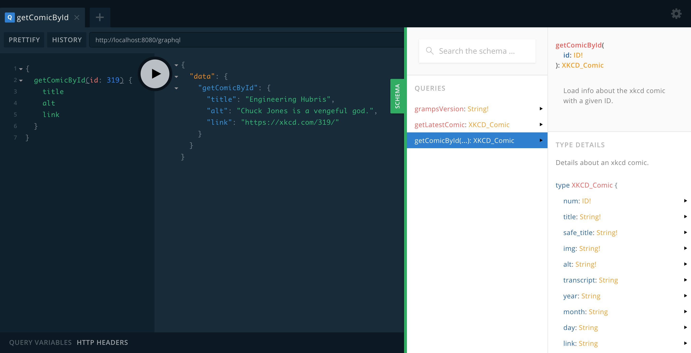
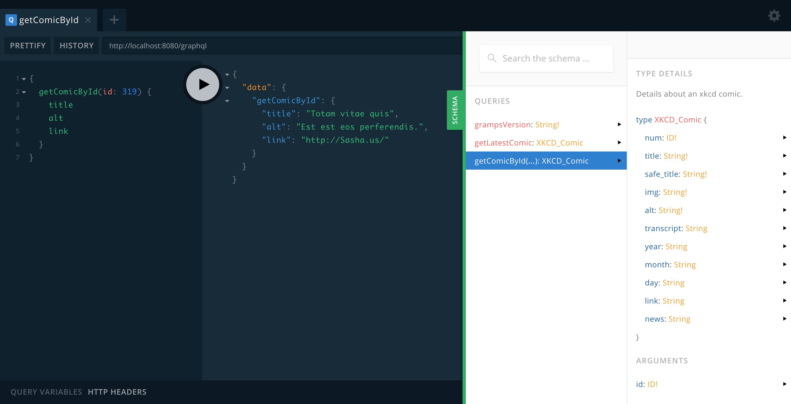
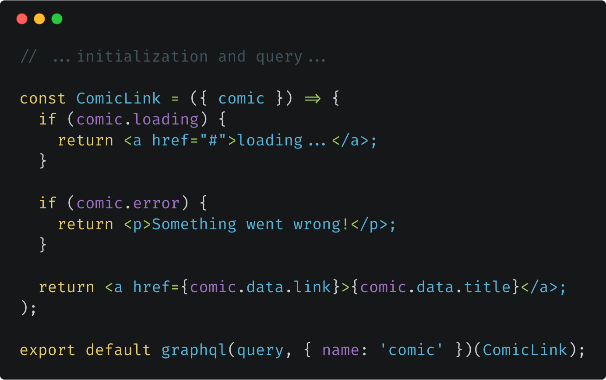
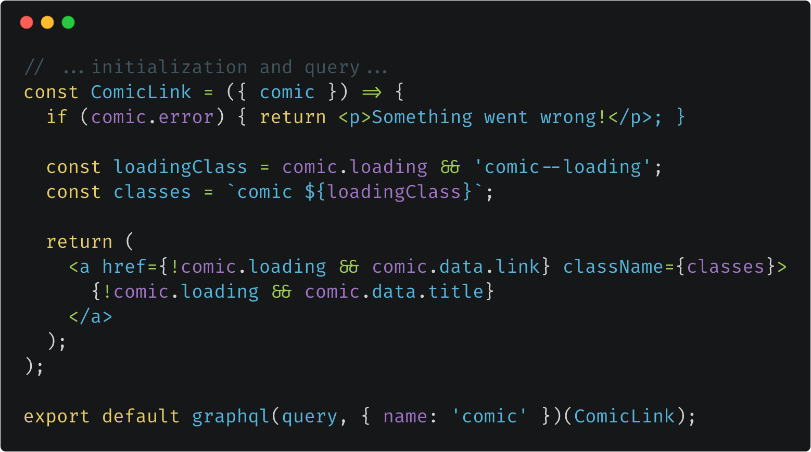
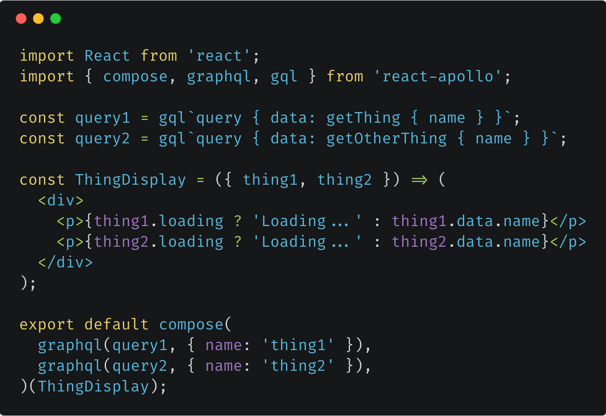

Because Front-End Development
Is Hard
Why is front-end development hard?
- More and more app logic is living in the front-end
- The front-end is creeping further into the back-end
- Our apps have to be fast...
- ...even on slow and unstable connections
It’s harder across teams:
- FEDs are dependent on back-end teams
- APIs have to exist before UI work can start
- If docs are missing or out of date...
- ...our “docs†are asking Steve on Slack
Back-end teams burn tons of hours supporting FEDs
Front-end teams burn tons of hours getting started
And if a server goes down...

It can be rough on our users, too.
"53% of visits are abandoned if a mobile site takes more than three
seconds to load"
- DoubleClick
What if we could...
- find all our data in a single place?
- test data queries in the browser?
- create custom queries with only data we need?
- work in parallel with back-end teams?
- develop even if the server is down?
- show explorable UIs before data is loaded?
- render data as it loads instead of all at once?
(Pause for dramatic effect.)
🉠We can! ğŸ‰
...and GraphQL + React make it easy
Interactive Online Documentation

Guaranteed to be up-to-date!
Test Queries in the Browser

This is copy-pasteable into your app.
Load Only Data We Need

No wasted data transfer.
Work Offline

Get realistic, variable mock data.
Adding data to the UI is a breeze 👌
Loading states are basically free

Skeleton components 💀 are even better

We can also show data as it arrives
